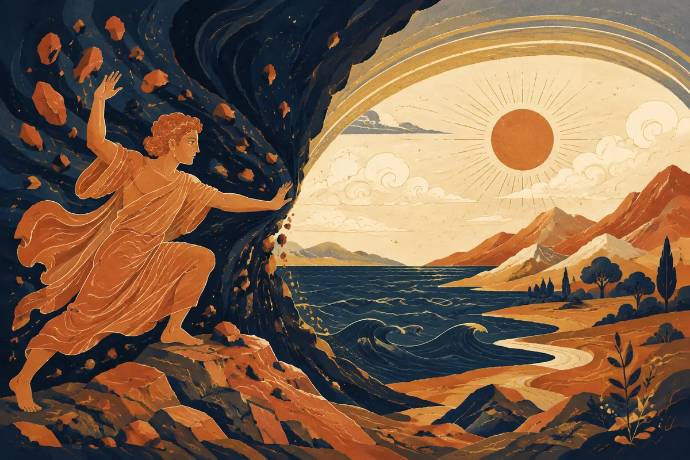
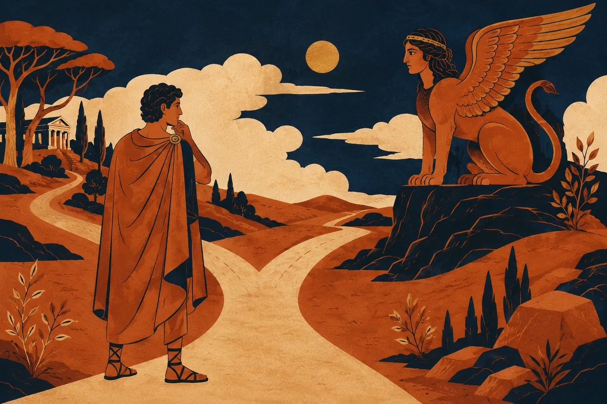
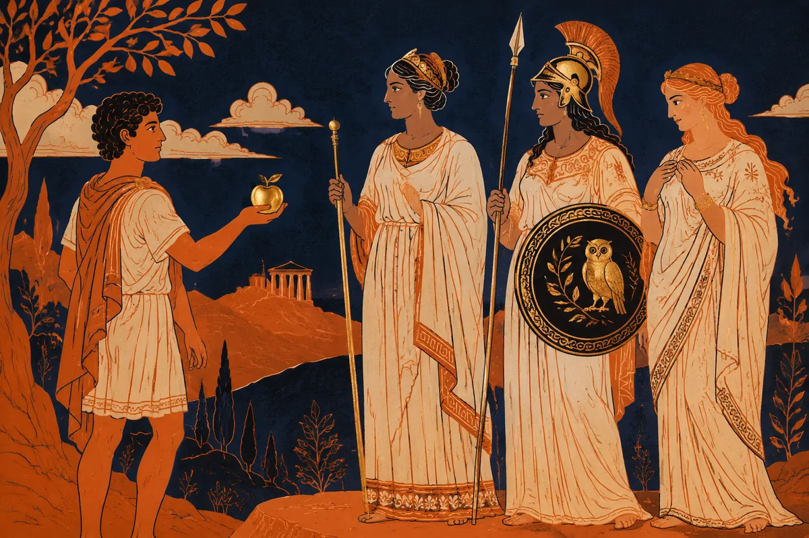
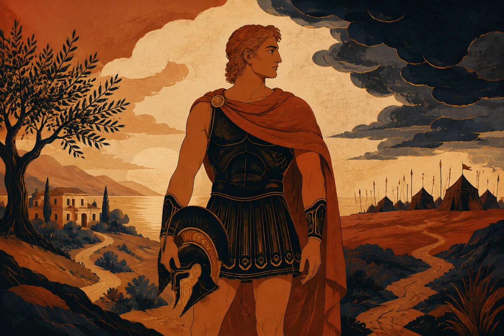
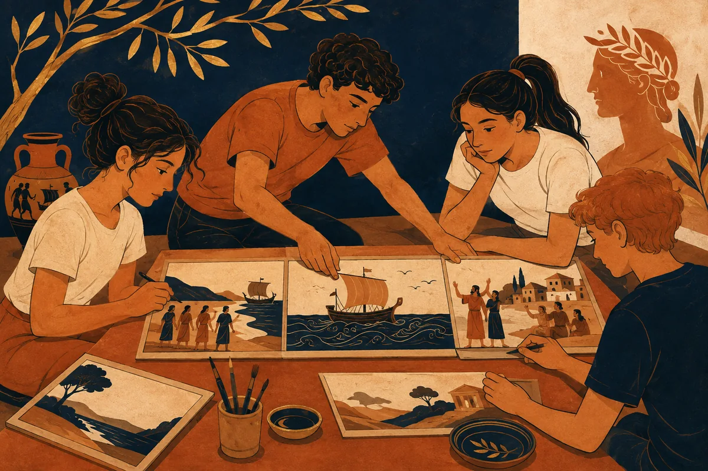

Antologia · Prima tecnico grafico
Racconti, miti
e scelte
Dalle prime storie ai poemi omerici. Leggere il mondo greco, riconoscere i conflitti, dare forma alle idee con parole e immagini.

Il filo del percorso
Segui l’ordine delle lezioni. In ogni tappa trovi un’immagine, una mappa, un laboratorio e un ripasso con recupero.
Che cos’è il racconto?
Una storia organizza gli eventi e orienta lo sguardo

Il mito dà un ordine al mondo
Origini, relazioni e conflitti nel racconto degli dèi

Quando la forza perde la misura
Hybris, conseguenze e responsabilità nei racconti greci

Edipo cerca la verità
L’indagine che cambia l’identità di chi la conduce

Antigone davanti al decreto
Il dovere verso i morti, la città e il coraggio di ascoltare

Paride: da una scelta alla guerra
Il pomo della discordia, Elena e le alleanze achee

La scelta di Achille: vita, gloria, memoria
Un dilemma che cambia significato dentro la storia

Iliade: dall’ira alla pietà
Il filo del poema, dal conflitto fra i capi ai funerali di Ettore

Odissea: ritrovare la strada, ritrovare sé
Viaggi, racconti e riconoscimenti lungo il ritorno a Itaca

Raccontare e scegliere
Dai percorsi di Achille e Odisseo a una storia visiva originale